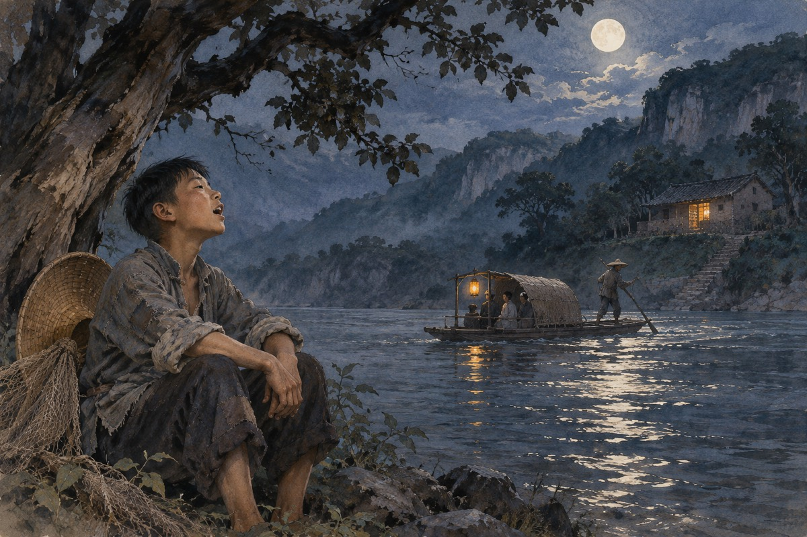
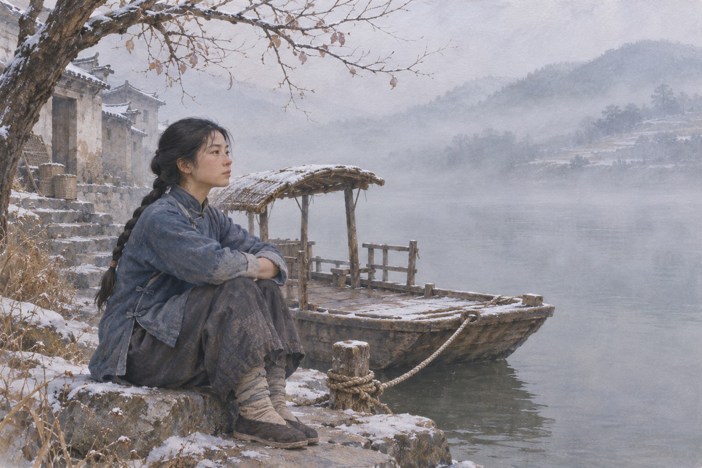

渡口
茶峒有个渡口，摆渡的是个老人，带着一个女孩，叫翠翠。老人不收钱，客人硬给，他就买茶叶挂在船上，谁渴了谁喝。翠翠在船上长大，会唱山歌，会跟狗说话。她的母亲很多年前投了河。老船夫七十岁，背有点驼，撑船的时候腰是直的。他有一只黄狗，还有一只渡船。他说：我这一辈子，就守着这条河。老人说：这条河，我渡了五十年。他说：河比我老。他说：我比河笨。
端午
端午那天，翠翠去城里看赛船，天黑了她还在河边等爷爷。船总的二儿子傩送看见她，说：你一个人在这儿。她说：我等我爷爷。他说：我送你回去。她说：我不认识你。他笑了，说：我叫傩送。他说：你叫什么。她说：翠翠。他说：翠翠，你等着，我去给你买个粽子。她说：我不要。他已经跑远了。她站在河边，看着他的背影。她说：你的船呢。他说：我没有船。她说：那你走路。他说：我走路。
两兄弟
船总有两个儿子，大儿子天保，二儿子傩送。两个人都喜欢翠翠。天保说：我先说的。傩送说：她先认识我。他们商量好，夜里到渡口唱歌，谁唱得她应了，就是谁的。天保说：我明天就去提亲。傩送说：你急什么。他说：我不急，我怕你急。两个人笑了一场，笑得都不太自然。天保说：我唱不过他。有人说：那你就别唱。他说：我得唱。
唱歌
夜里，傩送在渡口对面唱歌，唱了一整夜。翠翠在梦里听见，梦见自己飞到山上摘虎耳草。第二天她说：我昨晚做了个梦。爷爷说：梦见什么。她说：梦见歌声。爷爷没有说话。他唱的是本地情歌，声音很亮，一句一句飘过河。翠翠在梦里听见了，梦里她飞到悬崖上，摘了一大把虎耳草。她醒来的时候，手里什么都没有。她醒来的时候，嘴里还有歌的调子。她说：我好像听见有人叫我。
出处 · 原著第 10—12 章

车路与马路
船总托人来提亲，说的是大老天保。走的是「车路」：请媒人，送庚帖，按规矩来。翠翠的爷爷说：我还有一条路。他说：马路。他说：夜里到渡口唱歌，唱三年六个月。天保说我唱不过他。他知道自己唱不过傩送。他也知道翠翠在等谁。他说：我走车路，走不通就走人。爷爷说：车路稳，马路险。他说：可马路是自己选的。天保听了，没有说话。他第二天就托人来说亲，说的是车路。
天保走了
天保知道自己唱不过弟弟，一个人坐船下辰州，路上翻了船，淹死了。消息传回来，船总家的人都不说话。傩送说：是我害的。他哥哥的朋友说：不怪你。他说：怪我。船总说：这是命。傩送说：不是命，是我。他说：我不该跟他争。船总说：你没有争。他说：我唱了。船翻的时候，天在下雨。有人说：他水性好。有人说：他没游。
远走
傩送走了，去了桃源。走之前他没有见翠翠。有人说他是赌气，有人说他是难过。翠翠在渡口等，等了一天又一天。她问爷爷：他什么时候回来。爷爷说：会回来的。她问：他走的时候说什么了。爷爷说：他什么也没说。她说：那他为什么不来说。爷爷说：他怕说了就走不了。她说：他走的时候带的什么。爷爷说：一个包袱。她说：还有呢。他说：没有了。
爷爷死了
一个雷雨的夜里，爷爷死了。翠翠早上醒来，看见他躺在床上，没有气。她没有哭，只是坐在床边，坐到中午。后来船总家的人来了，帮她把老人埋了。她一个人守着渡口。她给他换上干净衣服，梳好头，说：爷爷，你睡吧。她说：我不怕。她把灯点上，坐在床边。雨下了一夜，河水涨了。她给他擦脸的时候，手很稳。她说：爷爷，你放心。她说：我会摆渡。
白塔倒了
那场雷雨把白塔冲倒了。塔是渡口的记号，船到了河心，看见塔就知道家在哪。塔倒了以后，翠翠每天早上都要看一眼那个土堆。杨马兵搬来住在渡口，替她撑船。他说：你爷爷年轻的时候，也在这儿唱过歌。他说：他唱得不好，可他不肯停。翠翠听着，没有说话。杨马兵说：这塔是你外公手里立的。他说：倒了不要紧，人还在。翠翠说：人也不在了。他说：那还有我。
出处 · 原著第 20—21 章
重修
船总出钱，把白塔重新砌了起来。砌塔的人说：这回砌高一点。翠翠说：不用。她说：跟原来一样就行。塔立起来那天，她站在塔下看了一会儿，然后回去撑船。她说：这下船能看见家了。修塔的石头是从河滩上搬的，一块一块，都是熟人搬的。有人说：这塔修起来，是给活人看的。翠翠说：是给回来的人看的。
等
冬天来了，船总家的人来劝她进城住。她说：我不去。她说：我要在这儿等他。她照旧摆渡，照旧不收钱，照旧把茶叶挂在船上。她常常坐在渡口，看着河的上游。有人给她说亲，她说：我不嫁。那人说：你等谁。她说：我不等谁。她说这话的时候，眼睛看着河的上游。冬天河面起雾。她说：这样的天，没有人过河。她说：那我就坐着。

那个人
有人说傩送在桃源成了家。有人说他还在外面漂。翠翠不听这些。她只是等。书里最后写：这个人也许永远不回来了，也许明天回来。船总家的人说：你别等了。她说：我没等。她说：我就在这儿摆渡。她说：谁来我都渡。她说：我等。她说：我不急。她说：我有的是时间。